Abstract
Visuomotor policies for robotic manipulation are often trained and evaluated with cameras mounted at fixed poses, but even small viewpoint changes can cause large performance drops when imitation learning latches onto camera-specific cues. We present Adversarial View Alignment (AVA), a lightweight training framework that jointly learns action prediction and viewpoint-invariant visual representations from expert actions on demonstration views and unlabeled RGB observations from auxiliary views—without matched cross-view observations, camera geometry, or changes to the deployed policy interface. Evaluated with ACT and Diffusion Policy across eight simulated manipulation tasks and with ACT on two real-world robotic tasks, AVA improves robustness to previously unseen viewpoints while preserving performance on demonstration viewpoints.
Method
AVA adds a small adversarial branch to the visual features of an existing visuomotor policy. Components appear in the same order as the method animation: policy network, auxiliary branch, gradient flow, then policy rollout with the discriminator removed.
01 · Policy network
Demonstration observations pass through the visual encoder and policy head to predict expert actions, supervised by the imitation loss.
02 · Auxiliary branch
Auxiliary observations share the encoder. Both demonstration and auxiliary features train the view discriminator.
03 · Imitation gradients
Imitation loss backpropagates through the policy head into the shared visual encoder.
04 · Adversarial loss
Adversarial loss trains the discriminator to classify the camera domain.
05 · Gradient reversal
At the GRL, the gradient is inverted by × −α(k) before reaching the encoder, so the encoder learns to confuse views.
06 · Policy rollout
The discriminator is dropped during rollout. Only observation → encoder → policy head → action remains — the same deployed policy interface.
Experiments
We study viewpoint robustness in simulation and on a real robot. Policies are trained with demonstration viewpoints and unlabeled auxiliary viewpoints, then evaluated on demonstration, auxiliary, and novel cameras.
Tasks
Simulation
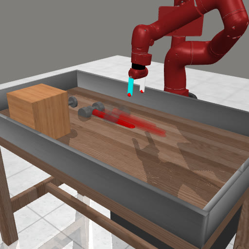
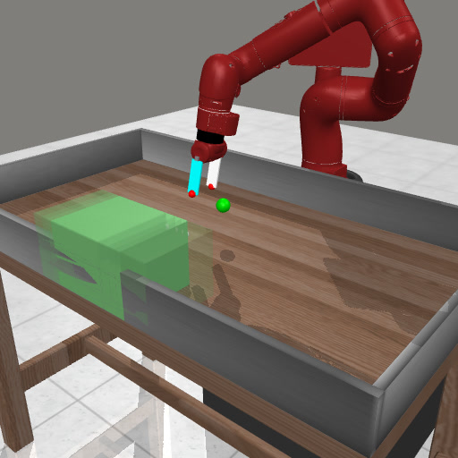
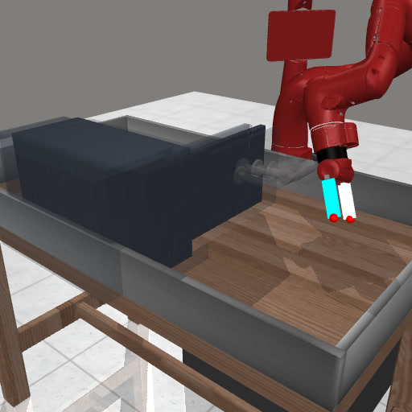
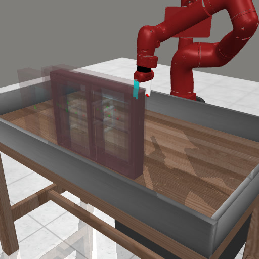
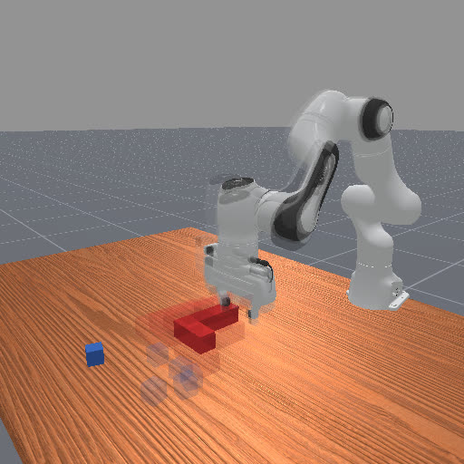
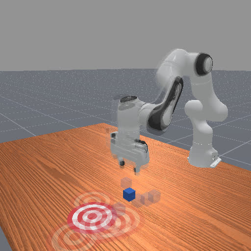
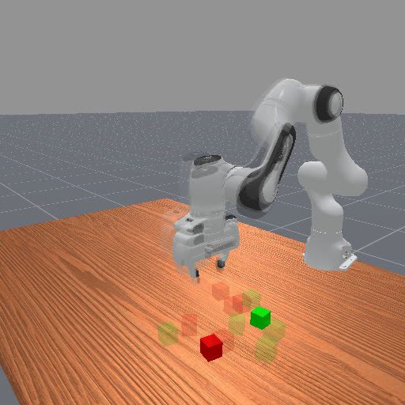
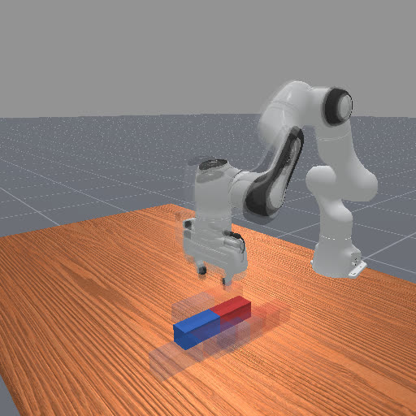
Real World
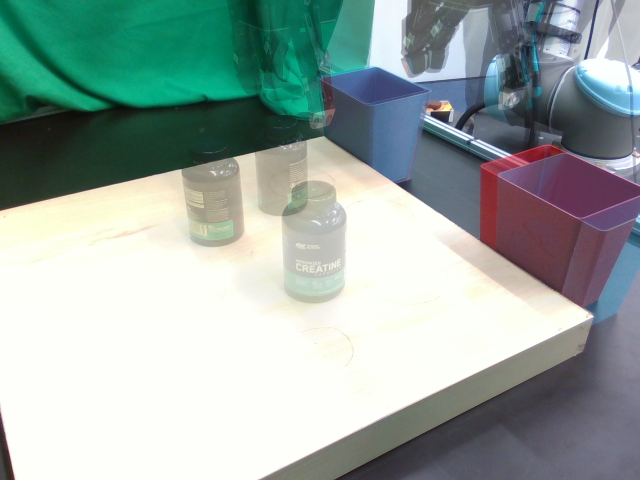
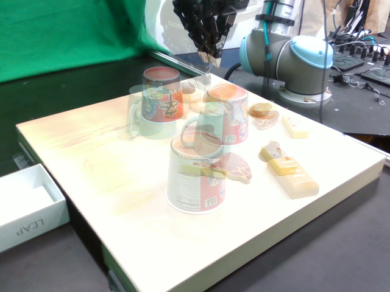
Results
AVA improves robustness under auxiliary and novel viewpoints while preserving demonstration-view performance for both ACT and Diffusion Policy in simulation, and for ACT on real-world tasks.
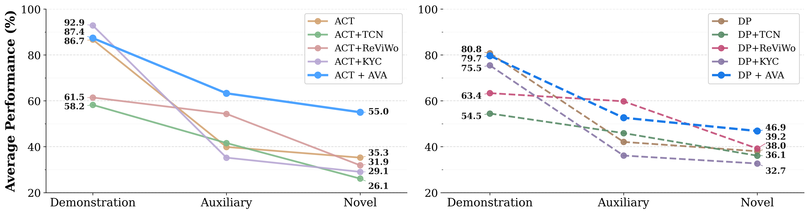
Simulation: normalized task scores across demonstration, auxiliary, and novel viewpoints.
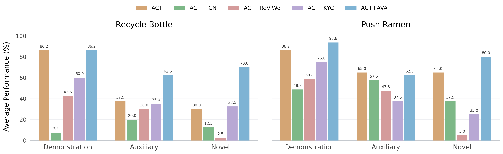
Real robot: ACT-based methods on demonstration, auxiliary, and novel viewpoints for Recycle Bottle and Push Ramen.
Novel Views
Without alignment, performance degrades on unseen cameras. AVA generalizes more reliably.
Pull Cube Tool · novel views
Hammer · novel views
UR5 Recycle Bottle · novel views
Takeaways
Learn from unlabeled views
Use auxiliary observations without additional action labels.
Generalize to unseen viewpoints
Improve viewpoint robustness while preserving demonstration-view performance.
Same policy interface
The discriminator is needed only during training.